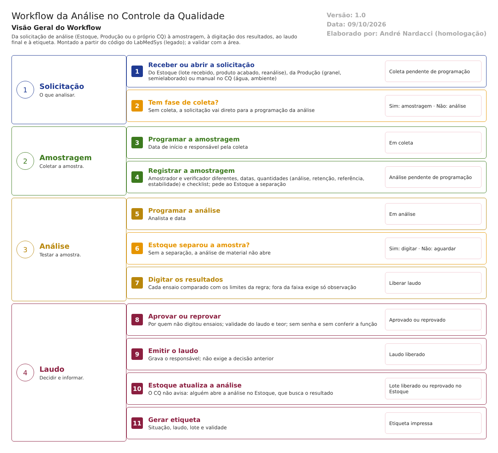

Objetivo
Este documento descreve o fluxo principal do Controle da Qualidade no LabMedSys: da solicitação de análise à amostragem, à análise com a digitação dos resultados, ao laudo final e à etiqueta. É o fluxo que decide se um lote de material ou de produto pode sair da quarentena.
Foi montado a partir do código do sistema legado. O que depende da prática da área está marcado como a validar. Os casos de teste estão no fim.
Escopo
- Solicitação de Análise (inclusão manual, chegada automática do Estoque e da Produção, priorização, programação de água e ambiente, cancelamento).
- Programação de Amostragem e Amostragens Pendentes.
- Registro de Amostragem, com o checklist de Verificação de Amostragem.
- Programação de Análise.
- Consultar Análise Programada (digitação dos resultados).
- Emissão Laudo Final (aprovar, reprovar, emitir) e o retorno ao Estoque.
- Gerar Etiqueta.
Fora do escopo: os cadastros de regras (Regra de Amostragem, Regra de Análise) e a estabilidade, que terão fluxos próprios.
Nomes das telas: como aparecem no menu ou no alto de cada tela. Os caminhos de código ficam só nas regras e são relativos a 4.controle_qualidade/app/. Para encurtar: UI/ = HSolutions.CQ.UI/, Svc/ = HSolutions.CQ.Services/, Infra/ = HSolutions.CQ.Infrastructure/, Dom/ = HSolutions.CQ.Domain/.
Visão geral do processo

A solicitação de análise chega do Estoque (lote recebido, produto acabado, reanálise), da Produção (granel e semielaborado) ou é aberta no próprio CQ (água, ambiente e inclusões manuais). Ela pode ter fase de coleta (o CQ coleta a amostra) e fase de análise.
Com fase de coleta, o CQ programa a amostragem, indicando o responsável e a data, e depois registra a amostragem: quem amostrou e quem verificou, as quantidades e o checklist. Nesse momento, o CQ pede ao Estoque a separação da amostra.
Em seguida, o CQ programa a análise para um analista. O analista digita os resultados de cada ensaio, comparados com os limites da Regra de Análise. Quando todos os ensaios estão preenchidos, a análise fica pronta para o laudo.
No laudo final, uma pessoa diferente dos analistas aprova ou reprova e depois emite o laudo. O Estoque fica sabendo do resultado quando alguém atualiza a análise na tela do Estoque; o CQ não avisa.
Situações da solicitação (como o código as atribui):
| # | Situação | Quando entra | Próximo passo | Tela |
|---|---|---|---|---|
| 1 | Coleta pendente de programação | Inclusão manual, programação de água e ambiente, ou chegada do Estoque/Produção com fase de coleta | Programar a amostragem | Programação de Amostragem |
| 2 | Em coleta | Amostragem programada (ou reagendada) | Registrar a amostragem | Registro de Amostragem |
| 3 | Análise pendente de programação | Amostragem registrada, ou chegada só com fase de análise | Programar a análise | Programação de Análise |
| 4 | Em análise | Análise programada | Digitar os resultados e emitir o laudo | Consultar Análise Programada; Emissão Laudo Final |
| 5 | Laudo liberado | Laudo emitido | — (fim); etiqueta | Gerar Etiqueta |
| — | Cancelada | Cancelamento em qualquer ponto | — (fim) | Solicitação de Análise; Programação de Análise |
As situações "Pendente", "Análise parcial" e "Concluída" existem no cadastro, mas nenhuma ação do fluxo as atribui (ver ponto de atenção 7).
Situações da análise: Pendente de digitação → Liberar laudo (todos os ensaios preenchidos) → Laudo liberado (laudo emitido). Aprovado ou reprovado é um campo à parte, e não uma situação.
Descrição funcional das etapas
"A numeração das regras de negócio é reiniciada em cada atividade, visando facilitar sua identificação e manutenção."
Solicitação de análise
Regras de negócio
- RN001 – Na inclusão manual, a tela exige o item de análise, o tipo de item, pelo menos um tipo de análise (físico-químico ou microbiológico) e pelo menos uma fase (coleta ou análise) ("Item análise não foi informado!", "Tipo análise não foi informado!", "Fase Coleta ou Fase Análise não foi informada!"). Para produto e material, exige o lote (item de entrada) ou a etapa da produção. Essas conferências ficam numa chamada separada, que a gravação não repete (
UI/Areas/SolicitacaoAnalise/Controllers/SolicitacaoAnaliseController.cs:120-148). - RN002 – O sistema grava uma solicitação por tipo de análise marcado. Toda solicitação manual nasce em Coleta pendente de programação, mesmo quando só a fase de análise foi marcada. O número leva o ano. A inclusão fica no histórico (
SolicitacaoAnaliseController.cs:309-312,:605,:687,:691). - RN003 – Para produto ou material sem motivo regulatório, a inclusão manual avisa o Estoque, que coloca o lote em reanálise (o efeito no Estoque é inferência) (
SolicitacaoAnaliseController.cs:695-699). - RN004 – A regra "O Valor do Teor, deve ser informado!" existe, mas nunca é conferida: o teor não é obrigatório na inclusão (
SolicitacaoAnaliseController.cs:303). - RN005 – Chegada automática (Estoque ou Produção): exige lote, validade, data de entrada, código e nome do produto, quantidades, uma fase, um tipo de análise e um tipo de item. Cria uma solicitação por tipo de análise, reunidas num agrupamento, cujo número volta ao Estoque. Nasce em Coleta pendente de programação se houver fase de coleta, ou em Análise pendente de programação se só houver análise. Em caso de erro, devolve 0, sem mensagem (
Svc/SolicitacaoAnalise/SolicitacaoAnaliseAutomaticaService.cs:310-330,:720-728;UI/Api/SolicitacaoAnaliseController.cs:32-34). - RN006 – Priorização: marca ou desmarca "Urgente" em várias solicitações de uma vez, com histórico (
UI/Areas/SolicitacaoAnalise/Controllers/PriorizarSolicitacaoAnaliseController.cs:63-73). - RN007 – Programação de Solicitação de Análise (água e ambiente): exige código, tipo de item, data e o ponto (tag) ("Tag não informada."). As solicitações são encaixadas de 30 em 30 minutos entre 8h e 18h. A exclusão só marca o registro como excluído, sem justificativa e sem histórico (
Infra/SolicitacaoAnalise/SolicitacaoAnaliseService.cs:35-58,:119-158). - RN008 – Cancelamento: pede justificativa e só é recusado se a solicitação já estiver cancelada ou concluída. A mensagem diz "...com situação diferente de pendente", mas o sistema deixa cancelar em análise e até com laudo liberado. Com justificativa curta, um erro de programação faz o histórico do cancelamento não ser gravado (
Dom/SolicitacaoAnalise/CancelarSolicitacaoAnaliseService.cs:11-16;SolicitacaoAnaliseController.cs:378-386).
Telas do sistema
| Módulo | Tela | Finalidade |
|---|---|---|
| Controle da Qualidade | Solicitação de Análise | Incluir, consultar e cancelar solicitações |
| Controle da Qualidade | Priorização de Solicitação Análise | Marcar urgência |
| Controle da Qualidade | Programação de Solicitação de Análise | Agenda de coletas de água e ambiente |
| Estoque e Produção | (automático) | Abrem a solicitação ao endereçar o lote, na entrada do produto acabado e nas etapas da produção |
Programação de amostragem
Regras de negócio
- RN001 – Exige data de início (não anterior a hoje) e o responsável pela coleta ("Data de Início não informada.", "Data de Início anterior a data atual.", "Usuário responsável não informado.") (
UI/Areas/SolicitacaoAnalise/Controllers/ProgramacaoColetaController.cs:272-291). - RN002 – Ao salvar, cria a amostragem em Pendente e passa a solicitação para Em coleta. Não confere a situação anterior (inferência: a mesma solicitação pode ser programada duas vezes) e não grava histórico (
Infra/SolicitacaoAnalise/SolicitacaoAnaliseService.cs:197-215). - RN003 – Reagendar troca a data e o responsável e volta a amostragem para Pendente, sem justificativa e sem histórico (
SolicitacaoAnaliseService.cs:161-183). - RN004 – Em Amostragens Pendentes, cada usuário vê só as coletas em que é o responsável; a visão de administrador mostra todas (
UI/Areas/Coleta/Controllers/PendentesController.cs:131-142). - RN005 – A amostragem só é cancelada enquanto Pendente ("Não é permitido cancelar uma amostragem situação diferente de pendente."), com justificativa e histórico. A solicitação continua Em coleta (
Dom/Coleta/CancelarColetaService.cs:11-15).
Telas do sistema
| Módulo | Tela | Finalidade |
|---|---|---|
| Controle da Qualidade | Programação de Amostragem | Programar a coleta: data e responsável |
| Controle da Qualidade | Amostragens Pendentes (e Visão Administrador) | Coletas a fazer; cancelar coleta |
Registro de amostragem
Regras de negócio
- RN001 – A tela só abre com a amostragem Pendente ou Programada e a solicitação Em coleta ("Situação de coleta inválida para Registrar"), e com o checklist de verificação ativo. A gravação não repete essas conferências (
UI/Areas/Coleta/Controllers/AmostragemController.cs:107-110,:987-995). - RN002 – Obrigatórios na tela: verificador, data e hora da verificação, amostrador, data e hora da amostragem e a quantidade. Verificador e amostrador precisam ser pessoas diferentes ("Usuário Verificador e Usuário Amostrador não podem ser iguais.") (
UI/Areas/Coleta/Script/Amostragem.js:149-184). - RN003 – A lista de amostradores traz só quem tem a função de amostrador no Principal, mas a gravação aceita qualquer usuário enviado pelo formulário. As datas vêm do formulário: não podem ser futuras, e a verificação precisa ser depois da amostragem, mas essa conferência fica numa chamada que só a tela faz (
AmostragemController.cs:262-298,:882-887). - RN004 – A Regra de Amostragem (do item e do tipo de análise) diz a quantidade a amostrar e a tolerância. A quantidade fica "OK" quando está dentro da tolerância. A tolerância é sempre tratada como percentual, mesmo quando a regra é de valor absoluto (
Amostragem.js:495-566). - RN005 – Grava as quantidades de análise, retenção, referência e estabilidade. A tela confere se o lote tem saldo para retenção, referência e análise; a estabilidade fica fora da conta ("Total amostrado/reservado superior ao saldo do lote!") (
AmostragemController.cs:370-421,:890-893). - RN006 – O checklist de verificação (cadastrado na tela Verificação de Amostragens e ligado à regra) é respondido aqui, pergunta a pergunta ("corresponde": sim ou não) (
AmostragemController.cs:926-945). - RN007 – Ao salvar, a amostragem fica Executada e a solicitação vai para Análise pendente de programação. O CQ pede ao Estoque a separação da amostra (ou, havendo motivo regulatório, a retirada de retenção, referência ou estabilidade). Fica no histórico (
AmostragemController.cs:182-219,:965-973).
Telas do sistema
| Módulo | Tela | Finalidade |
|---|---|---|
| Controle da Qualidade | Registro de Amostragem (pela Consultar Amostragem) | Registrar quem, quando, quanto e o checklist |
| Controle da Qualidade | Verificação de Amostragens | Cadastro do checklist |
| Estoque | (automático) | Recebe o pedido de separação ou de retirada da amostra |
Programação de análise
Regras de negócio
- RN001 – Exige o responsável ("Responsável não informado") e a data de início. A conferência da data fica numa chamada separada, que a gravação não repete (
UI/Areas/Coleta/Controllers/AnaliseProgramacaoController.cs:238-243,:301-324). - RN002 – A lista de analistas traz só quem tem a função de analista físico-químico ou microbiológico; a gravação não confere (
AnaliseProgramacaoController.cs:184,:194). - RN003 – Ao salvar, cria a análise em Pendente de digitação e passa a solicitação para Em análise, sem histórico (
Infra/SolicitacaoAnalise/SolicitacaoAnaliseService.cs:255-280). - RN004 – O cancelamento nesta tela muda a solicitação para Cancelada sem conferir a situação (o próprio código marca o trecho como provisório). A análise não é cancelada (
AnaliseProgramacaoController.cs:153-161).
Telas do sistema
| Módulo | Tela | Finalidade |
|---|---|---|
| Controle da Qualidade | Programação de Análise | Escolher o analista e a data |
Digitação dos resultados
Regras de negócio
- RN001 – Para produto e material, a análise só abre depois que o Estoque separou a amostra ("Solicitação referente a amostra aguardando pesagem/separação.") (
UI/Areas/Analise/Controllers/AnaliseProgramadaController.cs:205-222). - RN002 – Na tela: pelo menos um ensaio preenchido; a data do teste não pode ser futura; resultado de faixa precisa ser número, e de conformidade, "conforme" ou "não conforme". Resultado fora da faixa ou "não conforme" exige só uma observação ("O campo observação é obrigatório."). A gravação não repete essas conferências (
AnaliseProgramadaController.cs:263-356). - RN003 – A análise passa a Liberar laudo quando todos os ensaios têm referência, data e resultado; antes disso, continua em Pendente de digitação, o que permite salvar aos poucos (
Dom/Analise/ConfirmarAnaliseProgramadaService.cs:16-41). - RN004 – Cada usuário vê só as análises programadas para ele; a gravação não confere se quem digita é o analista programado (
AnaliseProgramadaController.cs:96,:104). - RN005 – Ensaios podem ser incluídos e excluídos com justificativa; só quem criou o ensaio pode excluí-lo. Fica no histórico (
AnaliseProgramadaController.cs:861-876,:941-967). - RN006 – O registro guarda, por ensaio, a especificação, os limites, a unidade, a referência e o padrão (texto), o resultado (texto), a data e a observação. Não guarda o equipamento usado nem o cálculo; quem digitou fica como "último a alterar" (
Dom/Analise/AnaliseItem.cs:20-39).
Telas do sistema
| Módulo | Tela | Finalidade |
|---|---|---|
| Controle da Qualidade | Consultar Análise Programada (e Visão Administrador) | Digitar os resultados de cada ensaio |
Laudo final
Regras de negócio
- RN001 – Para aprovar ou reprovar, a análise precisa estar em Liberar laudo, e quem aprova não pode ter digitado nenhum ensaio ("O Responsável pela aprovação precisa ser diferente dos analistas das análises.") (
Dom/Analise/LiberarLaudoService.cs:12-55). - RN002 – Aprovar: o botão só aparece com todos os resultados dentro da especificação, mas a gravação não confere. Exige teor quando a solicitação o pede ("Teor obrigatório."). A validade do laudo vem da validade do lote ou é digitada (com "reanálise prevista") e não pode ser anterior a hoje ("A Data de Validade tem que ser maior ou igual a atual.") (
UI/Areas/Analise/Controllers/EmissaoLaudoFinalController.cs:441-467,:733-745). - RN003 – Reprovar grava "não aprovado" e a observação. Nem aprovar nem reprovar gravam quem decidiu ou deixam histórico (
EmissaoLaudoFinalController.cs:489-506). - RN004 – Emitir o laudo só confere que o emissor não digitou ensaios. Não exige a análise em Liberar laudo nem a decisão de aprovar ou reprovar. Grava o responsável pelo laudo e leva a análise a Laudo liberado e a solicitação a Laudo liberado, sem histórico (
Dom/Analise/LiberarLaudoService.cs:40-44;EmissaoLaudoFinalController.cs:996-1011). - RN005 – Nenhuma das três ações confere a função de quem aprova ou emite, e nenhuma pede senha (
EmissaoLaudoFinalController.cs:967-1000). - RN006 – Os resultados podem ser corrigidos nesta tela, com histórico; a justificativa é exigida só pela tela (
UI/Areas/Analise/Controllers/AnaliseLaudoController.cs:456-475). - RN007 – Retorno ao Estoque: quando alguém atualiza a análise na tela do Estoque, o CQ responde, por agrupamento: reprovada se alguma análise foi reprovada (mesmo sem laudo emitido); aprovada só com laudo emitido; cancelada se todas foram canceladas; senão, pendente. Também devolve número e validade do laudo, teor e as quantidades de retenção, referência e estabilidade (
Svc/SolicitacaoAnalise/SolicitacaoAnaliseAutomaticaService.cs:118-173,:1023-1043).
Telas do sistema
| Módulo | Tela | Finalidade |
|---|---|---|
| Controle da Qualidade | Emissão Laudo Final | Corrigir resultado, aprovar, reprovar, emitir e imprimir o laudo |
| Estoque | Análise (Controle de Análise) | Atualizar a análise e trazer o resultado do CQ |
Etiqueta
Regras de negócio
- RN001 – A impressão não confere a situação nem se o laudo foi emitido: sai etiqueta de qualquer análise (
UI/Areas/Analise/Controllers/GerarEtiquetasController.cs:29,:108-123). - RN002 – A etiqueta traz aprovado (sem decisão, sai como "não"), registro, material, lote do fabricante, número do laudo, responsável, data, teor e validade (
UI/Controllers/Services/ObterRelatorioAnaliseService.cs:376-397). - RN003 – Nada vai para o histórico (
GerarEtiquetasController.cs:115-117).
Telas do sistema
| Módulo | Tela | Finalidade |
|---|---|---|
| Controle da Qualidade | Gerar Etiqueta | Imprimir a etiqueta de situação do lote |
Pontos de atenção
1. O laudo pode ser emitido sem decisão. A emissão não exige que a análise tenha sido aprovada ou reprovada, nem que todos os ensaios estejam preenchidos. Um laudo "liberado" pode sair sem resultado de aprovação.
2. Os atos de decisão não deixam rastro. Aprovar, reprovar e emitir não gravam histórico; aprovar e reprovar nem gravam quem decidiu (RDC 658/2022, arts. 125 e 258, VIII).
3. Quem decide não é conferido. Nenhuma etapa confere a função de quem aprova (art. 8º, XV). A única barreira é não ter digitado ensaios.
4. O Estoque recebe "reprovada" antes do laudo. Basta clicar em Reprovar para o Estoque, na próxima atualização, tratar o lote como reprovado, mesmo sem laudo emitido. A aprovação só vale com laudo emitido.
5. As conferências ficam na tela. Datas, campos obrigatórios, situação para registrar e resultados dentro da especificação são conferidos pela tela ou por chamadas separadas; a gravação não repete. Detalhe técnico no documento confidencial de segurança do CQ (a fazer).
6. Cancelamentos sem limite. A solicitação pode ser cancelada em análise e com laudo liberado; na Programação de Análise, sem conferir nada. A exclusão da agenda de água e ambiente não deixa histórico.
7. Situações que nunca acontecem. "Pendente", "Análise parcial" e "Concluída" não são atribuídas por nenhuma ação. Relatórios ou filtros por essas situações sempre virão vazios.
8. Amostragem: tolerância e saldo. A tolerância é sempre percentual, mesmo na regra de valor absoluto, e a conferência de saldo deixa a amostra de estabilidade de fora.
9. Etiqueta sem laudo. A etiqueta de situação pode ser impressa antes do laudo, com "não aprovado" por falta de decisão.
Casos de teste
Dados: um material TESTE com regra de amostragem e regra de análise TESTE (um ensaio de faixa e um de conformidade); o lote TESTELOTE001, se o recebimento do Estoque voltar a funcionar, ou uma solicitação manual; os usuários TESTE AMOSTRADOR, TESTE ANALISTA e TESTE APROVADOR (o último sem a função de chefe do CQ). Todos os registros com nome começando por TESTE.
| Caso | O que fazer | Resultado esperado |
|---|---|---|
| CT-CQ-001 | Solicitação manual sem tipo de análise; depois completa, com os dois tipos | Recusa; depois duas solicitações em Coleta pendente de programação |
| CT-CQ-002 | Solicitação com teor obrigatório e sem valor de teor | Pela regra, recusa. Registrar se aceitar (RN004) |
| CT-CQ-003 | Programar a amostragem com data de ontem | Recusa: "Data de Início anterior a data atual." |
| CT-CQ-004 | Programar duas vezes a mesma solicitação | Registrar se gerar duas amostragens |
| CT-CQ-005 | Registrar a amostragem com o mesmo usuário como amostrador e verificador | Recusa |
| CT-CQ-006 | Registrar a amostragem com data futura; depois com data de ontem | Recusa; depois aceita. Registrar que a data vem do formulário |
| CT-CQ-007 | Registrar com amostrador sem a função de amostrador (se a tela permitir escolher) | Pela norma, recusa. Registrar o comportamento |
| CT-CQ-008 | Abrir a análise de um material antes de o Estoque separar a amostra | Recusa: "...aguardando pesagem/separação." |
| CT-CQ-009 | Digitar um resultado fora da faixa sem observação; depois com observação | Recusa; depois aceita. Registrar que não abre investigação |
| CT-CQ-010 | Aprovar o laudo com o TESTE ANALISTA (que digitou) |
Recusa: "...precisa ser diferente dos analistas..." |
| CT-CQ-011 | Aprovar com o TESTE APROVADOR, sem a função de chefe do CQ |
Pela norma, recusa. Registrar se aprovar (ponto 3) |
| CT-CQ-012 | Emitir o laudo sem aprovar nem reprovar | Pela norma, recusa. Registrar se emitir (ponto 1) |
| CT-CQ-013 | Reprovar sem emitir; atualizar a análise no Estoque | Registrar se o lote aparecer como reprovado (ponto 4) |
| CT-CQ-014 | Aprovar e emitir; consultar o lote no Estoque sem atualizar a análise; depois atualizar | Continua em quarentena; depois sai. Confirma que o CQ não avisa |
| CT-CQ-015 | Consultar o histórico depois de aprovar e emitir | Registrar a falta de histórico (ponto 2) |
| CT-CQ-016 | Corrigir um resultado na Emissão Laudo Final e consultar o histórico | Valor antigo e novo, usuário, data e justificativa |
| CT-CQ-017 | Cancelar uma solicitação com laudo liberado, com justificativa curta | Registrar se cancelar, o erro e se o histórico ficou (ponto 6) |
| CT-CQ-018 | Imprimir a etiqueta de uma análise sem laudo | Registrar se imprimir (ponto 9) |
Prioridade (testes por risco): CT-CQ-011, 012, 013, 014, 015 e 017 primeiro. Eles tocam a liberação do lote, a decisão do CQ e a trilha de auditoria.